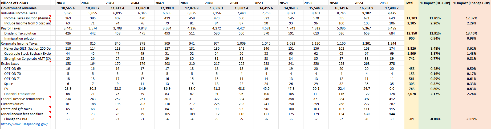
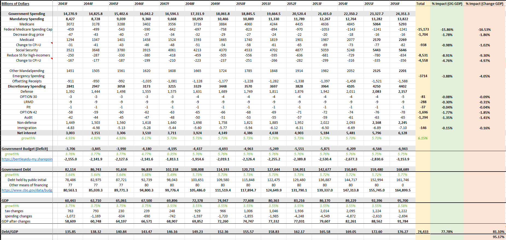

Projects / Fiscal Challenge 2026
Fiscal Challenge 2026: Can the US Get Its Debt Under Control?
My team built a model showing how tax and spending reforms could cut projected US debt from 176% of GDP to about 95% by 2056. I built the Excel model behind it.
The Problem
Think of debt-to-GDP like a household's debt compared to a year of income. At 176%, the U.S. would owe nearly twice what its entire economy produces in a single year.
That level of debt means more of the federal budget goes just to interest payments, leaving less room for everything else — from infrastructure to Social Security. Our starting point was the CBO's official long-term forecast, which projects debt reaching that 176% level by 2056 if nothing changes.
How the Model Works
Three steps, run for every year from 2026 through 2056.
Start with the Forecast
We began with the CBO's official projection of revenue, spending, and debt through 2056 — the baseline everything else is measured against.
Test the Reforms
Each proposed tax or spending change was layered into the model year by year to see its individual and combined effect on the budget.
Check the Economy's Reaction
Higher taxes and spending cuts can slow growth, so the model adjusts GDP using a fiscal multiplier for each change.
Inside the Model
Two views of the Excel dashboard that drives the whole analysis.


What We Proposed
Four groups of reforms, each with a real trade-off attached.
Health Care Largest Piece
Cap Medicare spending per person and negotiate drug prices directly.
Trade-off: pressure on hospitals.
Taxes on Higher Incomes & Investments
Limit itemized deductions, tax investment income, and tighten corporate tax rules.
Trade-off: less incentive to invest.
Social Security
Apply the payroll tax to earnings above $250K instead of capping it as today.
Trade-off: high earners pay more without higher benefits.
Smaller Levers
Defense contract audits, emergency-spending rules, "sin" excise taxes, and immigration channels.
Trade-off: modest impact individually, meaningful combined.
Largest Levers · $ Trillions, 2026–2056
Largest levers from our proposal; the full list is in the workbook.
The Result
Debt-to-GDP lands at about 95% (95.17% against a 95% goal) — essentially at target. In total, the plan reduces the 30-year deficit by roughly $74 trillion — about $36T from new revenue and $38T from spending cuts.
Limits
How to read the workbook: start with the Dashboard sheet — the other sheets feed it.